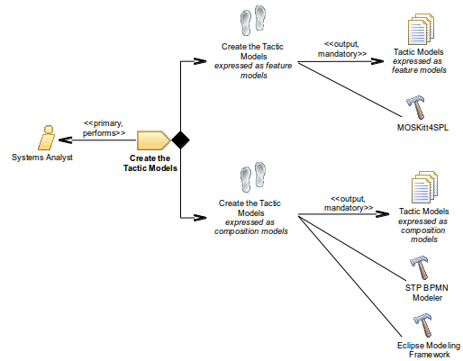

| Task: Create the Tactic Models |
 |
|
Purpose
| Create the tactic models. |
Relationships
| Roles | Primary Performer: | Additional Performers: |
|---|---|---|
| Outputs |
|
|
Main Description
| The objective of this task is to create a set of tactic models that express the tactical functionality to be triggered on
the service composition to preserve requirements when facing unknown context events. For each tactic model expressed as a
feature model, there is a tactic model expressed as a composition model. This tactic is composed of two steps, which can be
carried out in parallel.  |
Steps
|
Create the Tactic Models Expressed as Feature Models
Create the Tactic Models Expressed as Composition Models
|